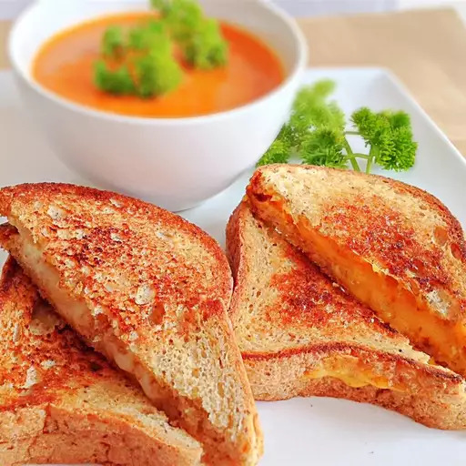

Grilled Cheese Sandwich

Description
Grilled cheese is a classic American sandwich that has been around since 1920. It is a hot sandwich made with buttered and toasted bread and originally filled with American cheese, but is now commonly made with one or more different cheeses.
Ingredients
These are the ingredients you’ll need to make this homemade grilled cheese sandwich:
- 4 slices white bread
- 3 tablespoons butter, divided
- 2 slices Cheddar cheese
Steps
Follow these steps to make mexican tinga:
- Preheat a nonstick skillet over medium heat. Generously butter one side of a slice of bread. Place bread butter-side down in the hot skillet; add 1 slice of cheese. Butter a second slice of bread on one side and place butter-side up on top of cheese.
- Cook until lightly browned on one side; flip over and continue cooking until cheese is melted. Repeat with remaining 2 slices of bread, butter, and slice of cheese.